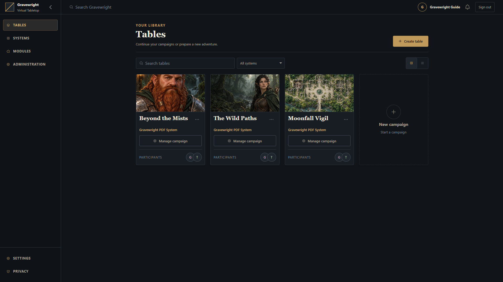

Primeiros passos
Instalação, pré-requisitos, primeira execução e preparação do código-fonte.


Para jogar localmente, use o instalador de Windows, Linux ou macOS. Ele reaproveita ferramentas compatíveis, prepara as ausentes e as dependências Python/npm fixadas, compila o frontend e salva configurações. O Gravewright Runner gerado inicia a aplicação preparada em uma etapa separada. O fluxo de terminal abaixo usa o código-fonte com configuração administrada manualmente.
| Plataforma | Instalar | Iniciar após instalar |
|---|---|---|
| Windows x64 | Abra Install Windows.bat | Abra Gravewright Runner.bat |
| Linux x64 / ARM64 | bash "./Install Linux.sh" | bash "./Gravewright Runner.sh" |
| macOS 13.5+ Intel / Apple Silicon | Abra Install macOS.command ou use bash "./Install macOS.command" | Abra Gravewright Runner.command |
Extraia antes o projeto completo para uma pasta gravável. A instalação pode baixar ferramentas e pacotes; a inicialização usa o ambiente preparado. Mantenha o terminal do Runner aberto e pressione Ctrl+C para encerrar. O endereço padrão é http://127.0.0.1:3000. Downloads privados Linux exigem glibc; consulte no guia as famílias de distribuição reconhecidas e os limites de Alpine/musl.
A release 0.3.2 usa Gravewright-0.3.2-django.zip e seu checksum correspondente, com instaladores para as três plataformas. Para uma instalação existente, siga o guia de atualização antes de substituir arquivos: esta versão acrescenta migrações de banco para relógios, pistas, preparação de campanha e histórico de diários. As notas da release descrevem o comportamento e a compatibilidade.
Requisitos
Use Python 3.14 ou superior, conforme pyproject.toml. O código usa sintaxe do Python 3.14; interpretadores antigos não são suportados. Instale uv pelas instruções oficiais. Execute os comandos na pasta que contém manage.py, depois de definir o armazenamento local das ferramentas nesse terminal. Os instaladores nativos fazem essa configuração automaticamente.
uv sync --locked
cp -n .env.example .env
uv run --locked python manage.py migrate
uv run --locked python main.pyuv sync inclui o grupo de dependências de desenvolvimento. O lock file fornece as versões reproduzíveis. Esse fluxo de terminal serve os recursos JavaScript e CSS existentes. Para recompilá-los, use o projeto npm em gravewright/maps/frontend, conforme frontend; os instaladores de cada plataforma fazem essa preparação automaticamente. No CMD do Windows, substitua a cópia por if not exist .env copy .env.example .env.
Primeiro acesso
Abra http://127.0.0.1:3000. Antes de existir um proprietário, /setup cria essa conta e inicia a sessão. Escolha nome, e-mail e senha com pelo menos 12 caracteres. Depois da configuração, /register cria participantes e /login autentica contas existentes.
O proprietário pode criar campanhas em /inside, convidar jogadores e entrar na mesa. Um mestre também pode escolher Gerenciar campanha no cartão da campanha para preparar sessões, diários, missões, relógios e pistas sem entrar na mesa. Os vínculos na campanha determinam permissões de mestre/jogador. Consulte o guia do usuário e a gestão de campanha.
Para acessar a administração separada do Django em /admin/:
uv run --locked python manage.py createsuperuserIsso cria uma conta administrativa, não o proprietário do VTT. Não substitui /setup.
Arquivos e configuração
O .env é opcional e carregado automaticamente. Variáveis exportadas no processo têm prioridade; ${NAME} no .env permanece literal. Reinicie o servidor após alterar valores. Consulte a referência de configuração.
O Runner gerado usa o .env do projeto e seus caminhos de banco/mídia, impondo seu perfil local de rede. Todo armazenamento padrão fica na pasta descompactada do projeto no Windows, Linux e macOS: data/ para estado, logs e assets coletados, e data/runner/ para ferramentas gerenciadas, ambientes e caches. O estado não é compartilhado pelo perfil do usuário do sistema operacional. --data-dir muda estado/logs/assets coletados; altere o .env para mudar o banco ou uploads. Antes de atualizar, faça backup conjunto do banco configurado, mídias e .env.
| Caminho | Finalidade |
|---|---|
.env | Configuração local e segredos privados |
data/gravewright.sqlite3 | Banco padrão da aplicação |
data/media/ | Uploads privados e pacotes de módulos instalados |
data/compendiums/ | Coleções do Runner em disco; configurações padrão do código-fonte usam data/vtt/compendiums/ |
data/staticfiles/ | Assets coletados do Runner; implantação padrão do código-fonte usa staticfiles/ na raiz |
data/runner/ | Ferramentas gerenciadas, ambientes, caches e arquivos temporários |
data/updates/ | Transações de atualização, releases e cópias de recuperação retidas |
data/test-gravewright.sqlite3 | Banco de testes Django |
test-results/ | Logs, relatórios e capturas de testes no navegador |
Se alterar os caminhos do banco ou dos arquivos, crie as pastas necessárias e conceda escrita à conta do serviço. O desenvolvimento local usa um processo ASGI e Channels em memória. Hospedagem pública e múltiplos processos precisam de configuração adicional; veja implantação.
Problemas comuns
| Sintoma | Verificação |
|---|---|
Tabela ausente / no such table | Execute migrações no GRAVEWRIGHT_DATABASE correto |
| Campanhas antigas não aparecem | Confira o caminho; db.sqlite3 na raiz não é o banco padrão configurado |
| Inicialização rejeita um valor | Confira a variável indicada; booleanos e limites são validados |
| Inicialização exige chave ou Redis | As configurações padrão do servidor com DJANGO_DEBUG=false exigem chave persistente e URL do Redis; os Runners gerados possuem um perfil local separado |
| Instalador ou Runner informa ferramentas preparadas ausentes | Execute novamente o instalador na pasta completa do projeto; o Runner gerado não instala ferramentas |
| Script Linux/macOS não abre | Execute o nome entre aspas com bash no terminal; veja no guia as permissões de execução e restrições de downloads do macOS |
| Login funciona, mas cookies somem no HTTP local | Esvazie GRAVEWRIGHT_PUBLIC_ORIGIN, desative DJANGO_SECURE_COOKIES para HTTP local e abra nova sessão no navegador |
| Host inválido ou WebSocket rejeitado | Use no navegador a origem de GRAVEWRIGHT_PUBLIC_ORIGIN, incluindo porta; confira hosts permitidos e cabeçalhos do proxy confiável em implantação |
| Porta 3000 ocupada | Altere GRAVEWRIGHT_PORT ou use manage.py runserver 127.0.0.1:3001 |
| Alterações não chegam a outro processo | Configure todos os processos com a mesma camada Redis |
| Tabuleiro vazio ou falha de renderização | Confira console, disponibilidade de WebGL e erros de recursos/rede |
Para verificações de desenvolvimento e preparo do navegador, continue em testes.